# Verificar, instalar y activar el paquete "tidyverse"if (!require(tidyverse)) {install.packages("tidyverse")}library(tidyverse)# Verificar, instalar y activar el paquete "kableExtra"if (!require(kableExtra)) {install.packages("kableExtra")}library(kableExtra)# Verificar, instalar y activar el paquete "readxl"if (!require(readxl)) {install.packages("readxl")}library(readxl)if (!require(dplyr)) {install.packages("dplyr")}library(dplyr)if (!require(ggplot2)) {install.packages("ggplot2")}library(ggplot2)
2 Introducción
La distribución de frecuencia es una herramienta fundamental en la Estadística que permite organizar, resumir y analizar un conjunto de datos. Consiste en agrupar los valores de una variable y mostrar cuántas veces aparece cada uno dentro del conjunto de información. De esta manera, facilita la comprensión de grandes cantidades de datos, permitiendo identificar patrones, tendencias y comportamientos.
A través de la distribución de frecuencia, los datos pueden representarse en tablas o gráficos, lo que hace más sencillo su análisis e interpretación. Existen diferentes tipos, como la frecuencia absoluta, relativa y acumulada, cada una aportando información específica sobre la forma en que se distribuyen los datos.
En el ámbito educativo y científico, esta herramienta es esencial para la toma de decisiones, ya que permite transformar datos sin organizar en información significativa. Además, constituye una base importante para otros conceptos estadísticos más avanzados, como las medidas de tendencia central y de dispersión.
3 Tipos de frecuencias
Existen varios tipos de frecuencias que se utilizan en una distribución de frecuencias, y cada una sirve para analizar los datos desde un punto de vista distinto.
3.1Frecuencia absoluta (f)
Es el número de veces que se repite un dato o valor dentro del conjunto. Representa la cantidad real de observaciones de ese valor. donde:
i = 1,2,3,\ldots,k
k es el número de categorías o clases.
La suma de todas las frecuencias absolutas es igual al tamaño de la muestra:
\sum_{i=1}^{k} f_i = n
Ejemplo: Si en una encuesta 4 personas tienen 20 años, la frecuencia absoluta de 20 años es f = 4.
3.2Frecuencia acumulada (F)
Es la suma progresiva de las frecuencias absolutas. Muestra cuántos datos hay hasta cierto valor o límite. Se denota por:
F_i
y se calcula como:
F_i = \sum_{j=1}^{i} f_j
La última frecuencia acumulada siempre es igual al tamaño total de la muestra:
F_k = n
Ejemplo: Si las frecuencias absolutas son:
18 años → 2
19 años → 3
20 años → 4
Entonces las frecuencias acumuladas son:
F(18) = 2
F(19) = 2 + 3 = 5
F(20) = 2 + 3 + 4 = 9
3.3Frecuencia relativa (fr)
Indica la proporción o porcentaje que representa cada valor respecto al total de datos. Se denota por:
h_i
y se calcula como:
h_i = \frac{f_i}{n}
Propiedad:
0 \le h_i \le 1
y
\sum_{i=1}^{k} h_i = 1
Se calcula así:
fr = \frac{f}{n} donde ( n ) es el total de observaciones
Ejemplo: Si hay 20 datos y 4 tienen el valor 20:
fr = \frac{4}{20} = 0.20 = 20%
3.4Frecuencia porcentual (%f)
Es la frecuencia relativa expresada en porcentaje.
Ejemplo: Si ( fr = 0.20 ), entonces ( %f = 20% ).
3.5Frecuencia relativa acumulada (Fr)
Es la suma progresiva de las frecuencias relativas. Muestra el porcentaje total acumulado hasta cierto valor.
Ejemplo: Si las fr son 0.10, 0.25 y 0.40, entonces las Fr serían: 0.10 → 0.35 → 0.75
3.6Frecuencia absoluta acumulada (Fr)
La frecuencia absoluta acumulada (F) indica el número total de observaciones que se encuentran en o por debajo de un valor determinado**.
Se calcula sumando las frecuencias absolutas (f) de manera acumulativa:
F_i = f_1 + f_2 + f_3 + ... + f_i
3.7Frecuencia porcentual acumulada (%F)
Es la suma de los porcentajes hasta cierto punto, mostrando el porcentaje total acumulado. Es útil para saber, por ejemplo, “qué porcentaje de los datos está por debajo de cierto valor”.
Ejemplo de una tabla de distribución con las frecuencias mencionadas
Nota
Frecuencia absoluta (f)
Frecuencia acumulada (F)
Frecuencia absoluta acumulada
Frecuencia relativa (fr)
Frecuencia relativa acumulada (Fr)
Frecuencia porcentual (%f)
Frecuencia porcentual acumulada (%F)
2
2
2
2
0.20
0.20
20 %
20 %
3
2
4
4
0.20
0.40
20 %
40 %
4
3
7
7
0.30
0.70
30 %
70 %
5
3
10
10
0.30
1.00
30 %
100 %
Total
10
1.00
100 %
4 Tabla De Doble Entrada
Una tabla de doble entrada es un tipo de tabla que se utiliza para organizar información relacionando dos variables al mismo tiempo. Se compone de filas y columnas, donde cada una representa una categoría diferente, y en las intersecciones se registran los datos correspondientes.
En términos sencillos, sirve para comparar o analizar cómo se distribuyen los datos según dos características. Por ejemplo, se puede usar para mostrar cuántos estudiantes hay según grado y género, o según edad y tipo de actividad.
Este tipo de tabla es muy utilizado en la Estadística porque permite visualizar relaciones entre variables de manera clara y ordenada.
Ver código
# Instalarinstall.packages("kableExtra")# Cargar libreríaslibrary(knitr)library(kableExtra)# Crear tablatabla <-data.frame(Grado =c("Grado 3", "Grado 4"), Niños =c(10, 8), Niñas =c(12, 11))# Mostrar tabla con bordes completoskable(tabla) %>%kable_styling(full_width =FALSE, position ="center")
Grado
Niños
Niñas
Grado 3
10
12
Grado 4
8
11
4.1 Componentes de una tabla de doble entrada
Título Describe de qué trata la tabla
Filas Representan una variable (por ejemplo, grados)
Columnas Representan otra variable (por ejemplo, género)
Encabezados Nombres que identifican filas y columnas
Celdas Espacios donde van los datos
Totales Sumas por filas, columnas y total general
4.2 Notacion
n_{ij}: frecuencia en la fila i y columna j
n_{i\cdot}: total de la fila i
n_{\cdot j}: total de la columna j
n : total general
5 Reconocimiento De La Tabla
La presente base de datos reúne información de carácter educativo, en la cual se registran diversas variables asociadas a aspectos académicos y sociodemográficos de los estudiantes. Este conjunto de información permite realizar un análisis descriptivo mediante la organización y síntesis de los datos a través de distribuciones de frecuencia.
En dicha base se identifican variables como género, nivel educativo, estrato socioeconómico, número de cursos, horas de estudio, promedio académico, porcentaje de asistencia, uso de tecnología y nivel de satisfacción, lo que posibilita un análisis integral de la población estudiada. A partir de estos datos, es posible identificar patrones y tendencias que contribuyen a una mejor comprensión del comportamiento de los estudiantes.
Este reconocimiento inicial constituye el punto de partida para la aplicación de herramientas propias de la Estadística, orientadas a lograr una interpretación adecuada y significativa de la información.
5.1 Carga De Datos
primero, cargamos las librerias necesarias y leemos el archivo Excel.
5.2 En Formato xlsx
Ver código
educacion <-read_excel("datos/educacion.xlsx")
. EXPORTAR EL DATASET
MOSTRAR
Ver código
# Instalarinstall.packages("kableExtra")# Cargar libreríaslibrary(knitr)library(kableExtra)# Mostrar tabla con bordeskable(head(educacion)) %>%kable_styling(full_width =FALSE)
library(ggplot2)ggplot(tabla_cursos, aes(x ="", y = fi, fill =factor(Cursos))) +geom_bar(stat ="identity", width =1) +coord_polar(theta ="y") +labs(title ="Distribución de Frecuencia - Cursos",fill ="Cursos" ) +theme_minimal()
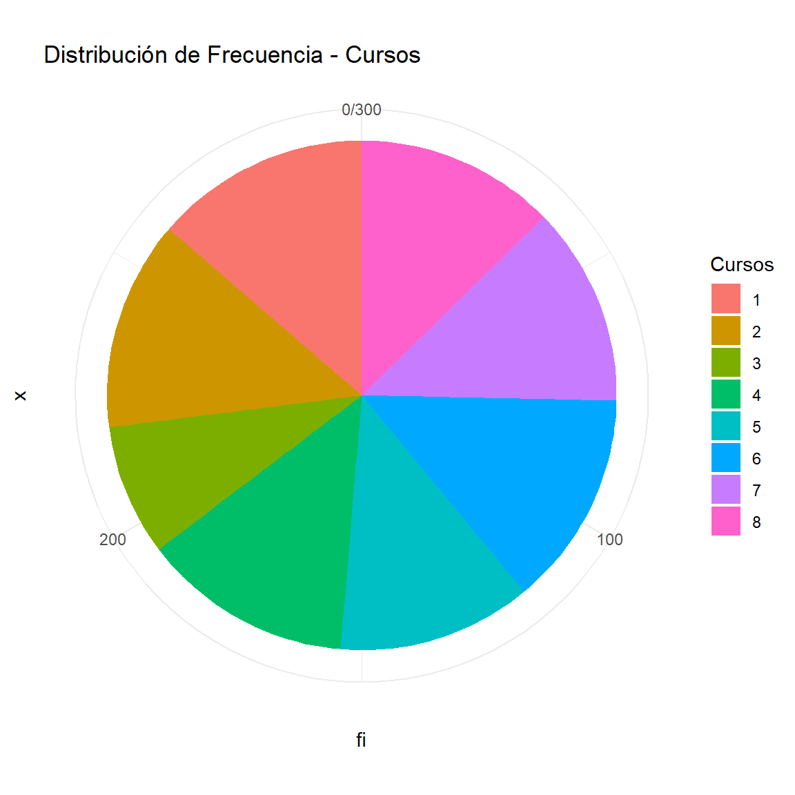
Ver código
library(ggplot2)ggplot(tabla_cursos, aes(x = Cursos, y = fi)) +geom_line(color ="#2E86C1", size =1.2) +# línea azul elegantegeom_point(color ="#E74C3C", size =4) +# puntos rojos más visibleslabs(title ="Frecuencia de Cursos",subtitle ="Distribución de estudiantes por número de cursos",x ="Número de Cursos",y ="Frecuencia" ) +theme_minimal() +theme(plot.title =element_text(size =16, face ="bold", color ="#2C3E50"),plot.subtitle =element_text(size =12, color ="gray40"),axis.title =element_text(size =12, face ="bold"),axis.text =element_text(size =10),panel.grid.major =element_line(color ="gray80"),panel.grid.minor =element_blank() )
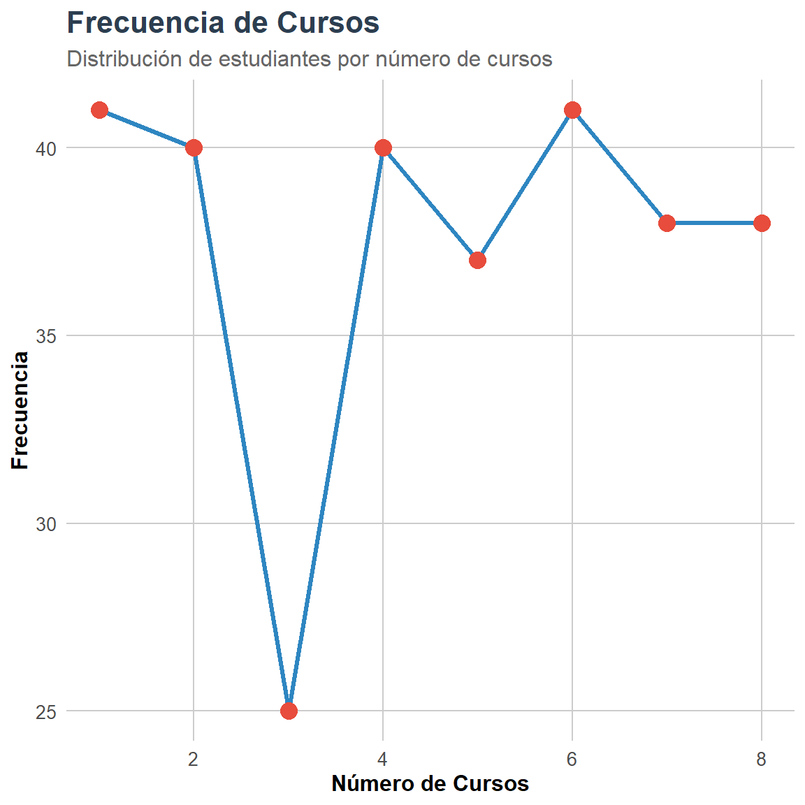
Interpretación
En la tabla de frecuencia correspondiente a la variable CURSOS, se observan distintos valores que representan el número de cursos que han tomado los estudiantes. La distribución presenta una participación bastante uniforme, ya que la mayoría de los valores se encuentran en un rango cercano entre el 12% y el 13%, lo que indica una frecuencia similar entre ellos. Sin embargo, se identifica al menos un valor con un porcentaje inferior, evidenciando una menor representación dentro del conjunto de datos.
Las gráficas derivadas de esta información permiten visualizar la composición total de los cursos, mostrando una distribución equilibrada entre la mayoría de las categorías. Esto sugiere que no existe una concentración marcada en un solo número de cursos, sino más bien una distribución homogénea, lo que refleja un comportamiento balanceado en la población analizada.
5.4 Cuantitativas Continuas
Horas
Tabla de frecuencia
Ver código
ggplot(educacion, aes(x = Horas)) +geom_histogram(bins =10, fill ="#3498DB", color ="black") +labs(title ="Histograma de Horas de Estudio",x ="Horas",y ="Frecuencia" ) +theme_minimal()
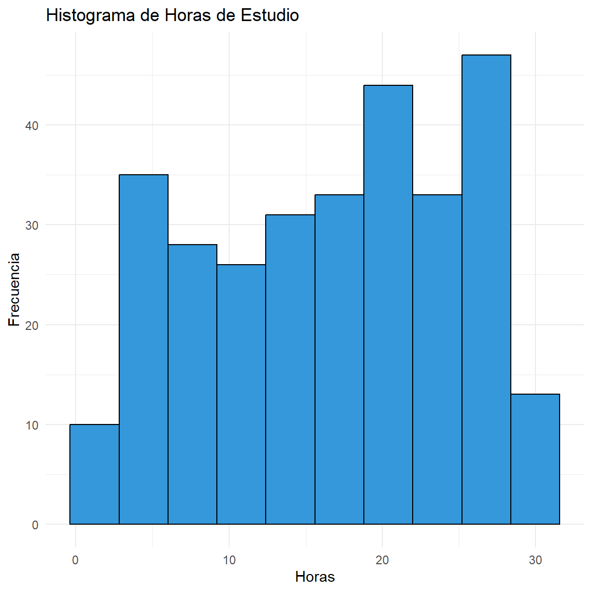
Gráfica
Ver código
library(ggplot2)# Crear histograma sin error (guardado)hist_data <-ggplot(educacion, aes(x = Horas)) +geom_histogram(bins =10)# Polígono de frecuenciaggplot(educacion, aes(x = Horas)) +geom_freqpoly(bins =10, color ="#E74C3C", size =1.2) +labs(title ="Polígono de Frecuencia - Horas de Estudio",x ="Horas",y ="Frecuencia" ) +theme_minimal()
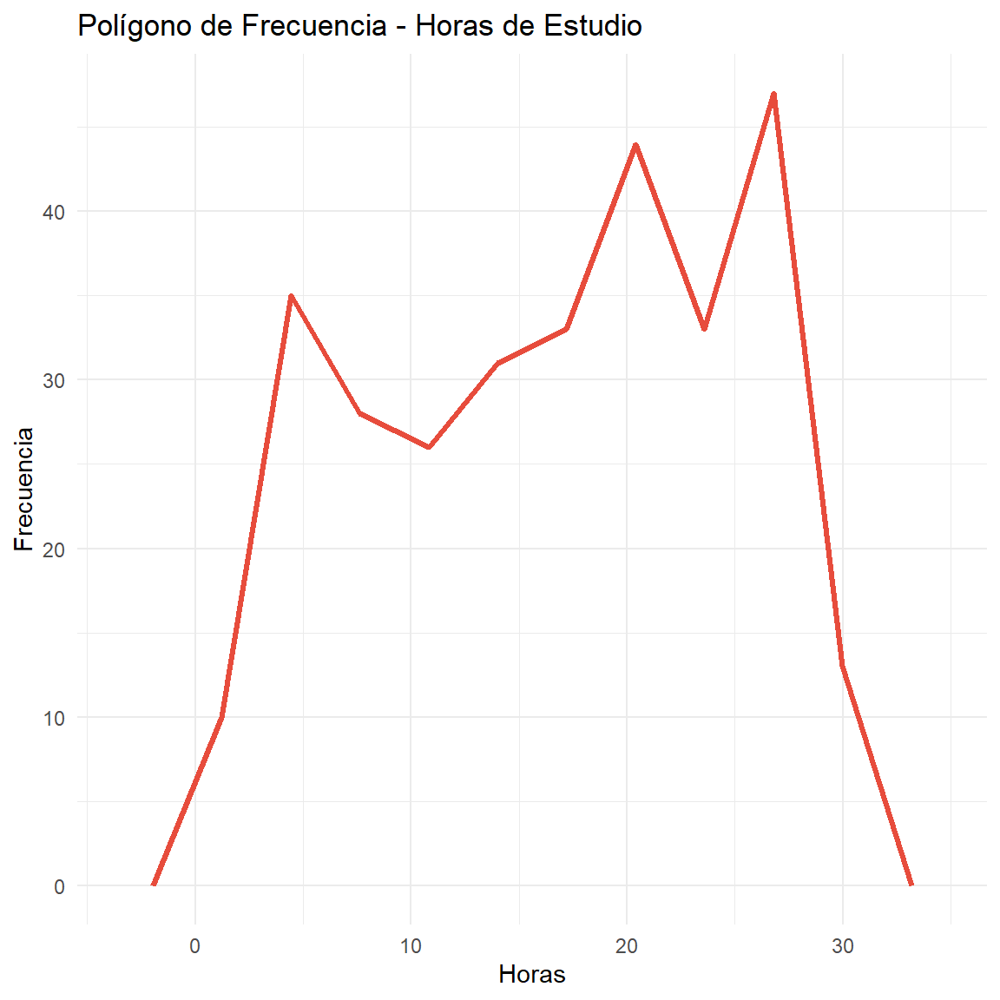
Interpretación
A partir de la tabla de distribución de frecuencias de la variable Horas, se evidencia que los datos se organizan en distintos intervalos que representan el tiempo de estudio de los estudiantes. Se observa que la mayor concentración se encuentra en los intervalos centrales, lo que indica que la mayoría dedica una cantidad moderada de tiempo al estudio.
El histograma permite apreciar la forma de la distribución, mostrando un comportamiento relativamente uniforme con una leve acumulación en ciertos rangos. Esto sugiere que los datos no presentan una dispersión marcada ni variaciones extremas. Además, los valores mínimos y máximos no evidencian la presencia de datos atípicos relevantes.
En general, la distribución de las horas de estudio refleja un comportamiento equilibrado, lo cual puede interpretarse como una relativa estabilidad en los hábitos de estudio de los estudiantes analizados.
library(ggplot2)ggplot(educacion, aes(x =`Asistencia (%)`)) +geom_density(fill ="#58D68D", alpha =0.6) +labs(title ="Densidad del Porcentaje de Asistencia",x ="Asistencia (%)",y ="Densidad" ) +theme_minimal()
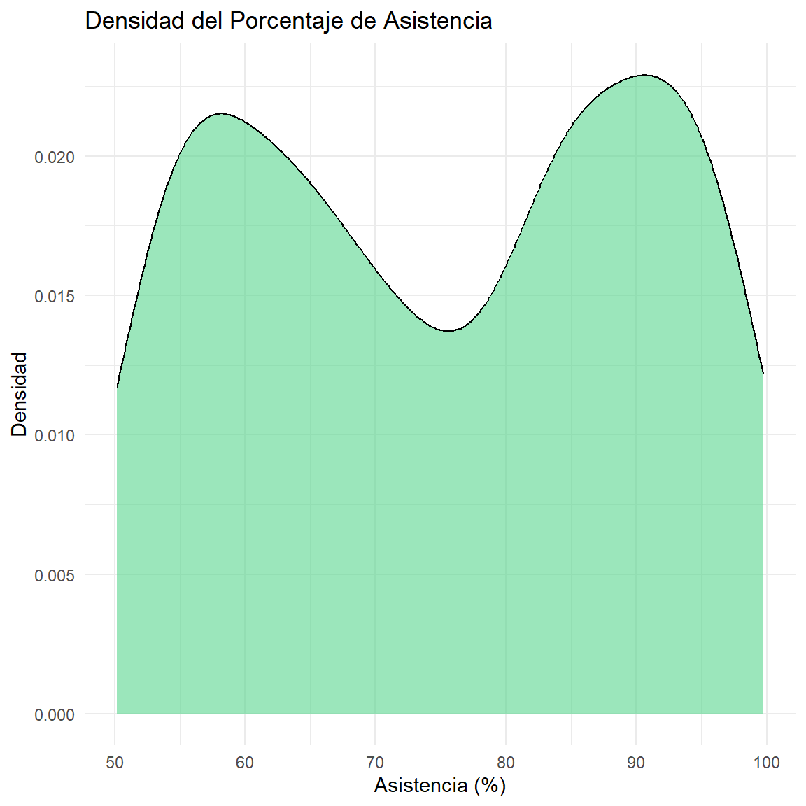
Ver código
library(dplyr)library(ggplot2)# Crear tabla de frecuencia de asistenciatabla_asistencia <- educacion %>%mutate(clase =cut(`Asistencia (%)`, breaks =10)) %>%count(clase, name ="fi")# Gráfica (barras)ggplot(tabla_asistencia, aes(x = clase, y = fi, fill = clase)) +geom_col(color ="black") +labs(title ="Distribución de Frecuencia - Asistencia",x ="Intervalos de Asistencia (%)",y ="Frecuencia" ) +theme_minimal() +theme(legend.position ="none",axis.text.x =element_text(angle =45, hjust =1) )
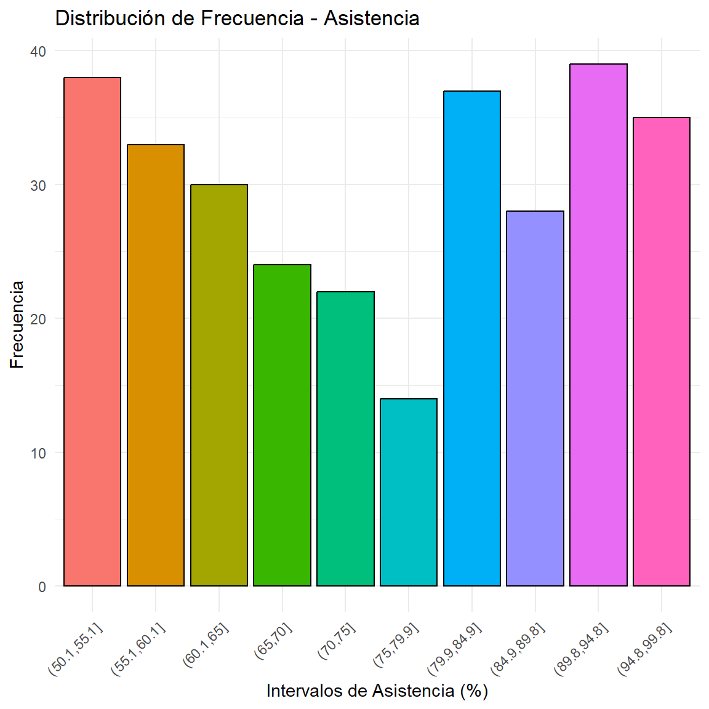
Interpretación
A partir de la tabla de distribución de frecuencias de la variable Asistencia (%), se evidencia que los datos se concentran principalmente en los intervalos medios y altos, lo que indica que la mayoría de los estudiantes presenta niveles de asistencia elevados.
El histograma permite apreciar la forma de la distribución, mostrando una tendencia hacia valores altos de asistencia. Esto sugiere un comportamiento favorable en términos de compromiso académico por parte de los estudiantes.
Por su parte, el polígono de frecuencia confirma la concentración en los intervalos superiores, evidenciando que la proporción de estudiantes con bajos niveles de asistencia es reducida. En conjunto, la distribución presenta una ligera asimetría hacia la izquierda, lo que indica un predominio de valores altos dentro del conjunto de datos
5.6 Promedio
Ver código
library(dplyr)library(knitr)library(kableExtra)# Número de clases (Sturges)k <-round(1+3.322*log10(nrow(educacion)))# Crear tabla agrupadatabla_promedio <- educacion %>%mutate(clase =cut(Promedio, breaks = k) ) %>%group_by(clase) %>%summarise(fi =n(), .groups ="drop") %>%mutate(hi =round(fi /sum(fi), 4),Porcentaje =paste0(round(hi *100, 2), "%"),Fi =cumsum(fi),Hi =cumsum(hi) )# Mostrar tabla con diseño diferentetabla_promedio %>%kable(col.names =c("Intervalo (Promedio)", "fi", "hi", "%", "Fi", "Hi"),align ="c" ) %>%kable_styling(bootstrap_options =c("striped", "bordered"),full_width =FALSE ) %>%row_spec(0, bold =TRUE, color ="white", background ="#34495E") %>%column_spec(1, bold =TRUE, color ="black") %>%column_spec(2:6, color ="#2C3E50")
Intervalo (Promedio)
fi
hi
%
Fi
Hi
(1.03,1.47]
35
0.1167
11.67%
35
0.1167
(1.47,1.91]
35
0.1167
11.67%
70
0.2334
(1.91,2.35]
25
0.0833
8.33%
95
0.3167
(2.35,2.79]
28
0.0933
9.33%
123
0.4100
(2.79,3.23]
39
0.1300
13%
162
0.5400
(3.23,3.67]
40
0.1333
13.33%
202
0.6733
(3.67,4.11]
30
0.1000
10%
232
0.7733
(4.11,4.55]
32
0.1067
10.67%
264
0.8800
(4.55,4.99]
36
0.1200
12%
300
1.0000
Gráfica
Ver código
library(ggplot2)ggplot(educacion, aes(x = Promedio)) +geom_freqpoly(bins =10, color ="#E67E22", size =1.2) +labs(title ="Polígono de Frecuencia del Promedio Académico",x ="Promedio",y ="Frecuencia" ) +theme_minimal()
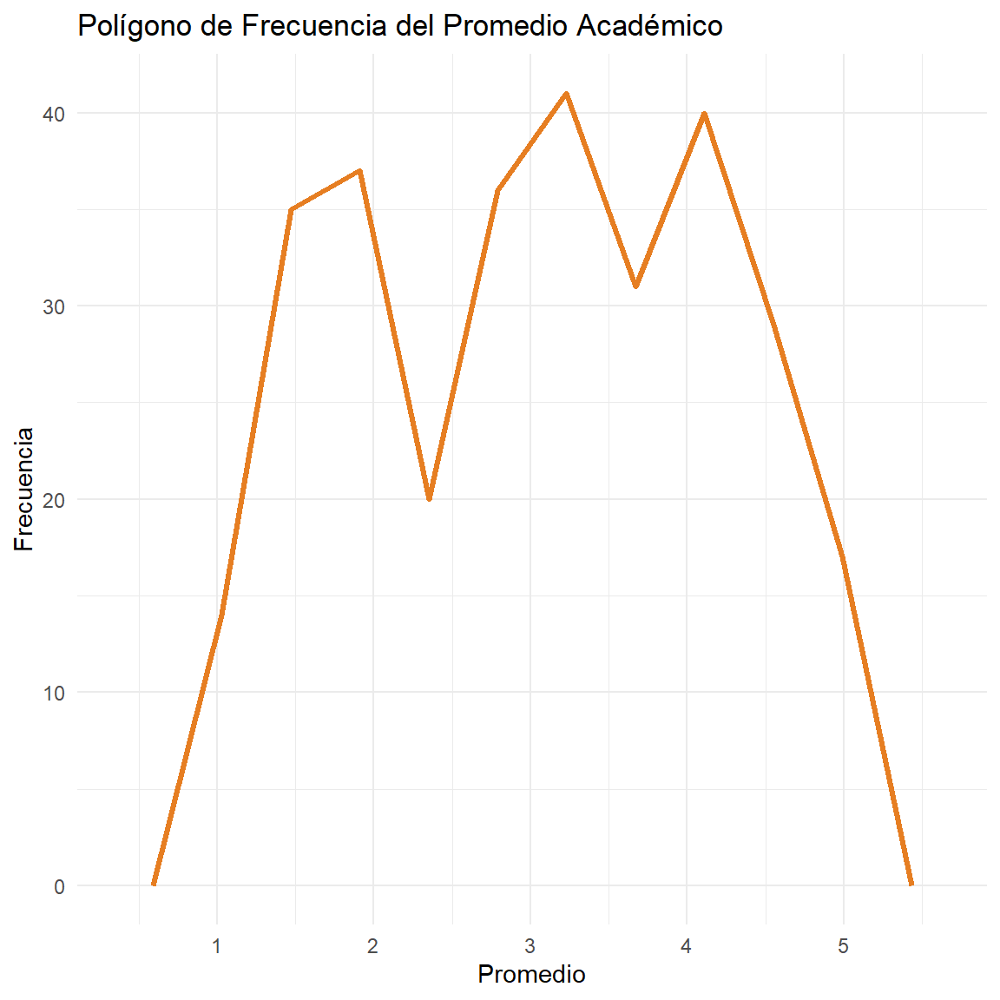
Ver código
library(ggplot2)ggplot(tabla_promedio, aes(x = clase, y = fi, group =1)) +geom_area(fill ="#F5B041", alpha =0.7) +labs(title ="Distribución de Frecuencia - Promedio",x ="Intervalos de Promedio",y ="Frecuencia" ) +theme_minimal() +theme(axis.text.x =element_text(angle =45, hjust =1) )
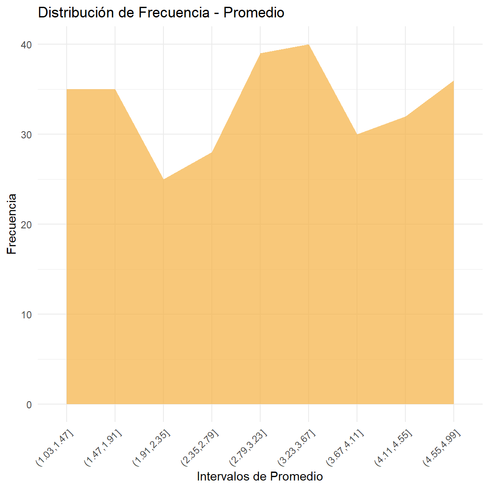
Interpretación
A partir de la tabla de distribución de frecuencias de la variable Promedio, se observa que los datos se concentran principalmente en los intervalos intermedios, lo cual indica que la mayoría de los estudiantes presenta un rendimiento académico moderado.
El histograma permite visualizar la forma de la distribución, evidenciando un comportamiento relativamente equilibrado y sin presencia de valores extremos significativos. Esto sugiere que los promedios académicos se distribuyen de manera homogénea dentro del grupo analizado.
Por su parte, el polígono de frecuencia confirma la concentración en determinados intervalos, destacando una ligera tendencia hacia el centro de la distribución. En términos generales, el comportamiento del promedio académico refleja estabilidad en el rendimiento de los estudiantes, sin variaciones abruptas.
library(ggplot2)ggplot(tabla_tec, aes(x = Tecnologia, y = fi)) +geom_point(size =4, color ="#5DADE2") +geom_line(aes(group =1), color ="#2E86C1", size =1) +labs(title ="Nivel de Acceso a Tecnología",x ="Tecnología",y ="Frecuencia" ) +theme_minimal()
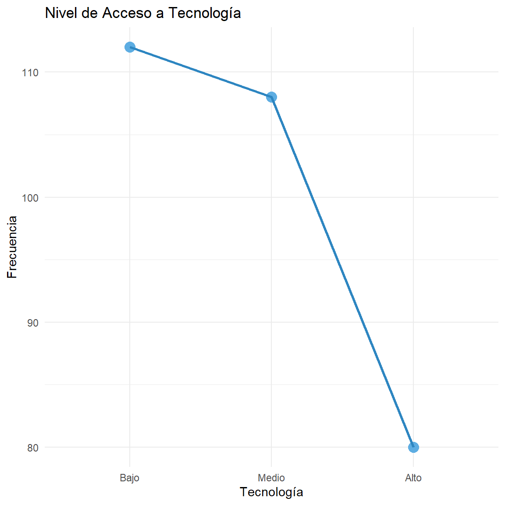
Ver código
library(ggplot2)ggplot(tabla_tec, aes(x = Tecnologia, y = fi, fill = Tecnologia)) +geom_col(color ="black") +coord_flip() +labs(title ="Nivel de Acceso a Tecnología",x ="Tecnología",y ="Frecuencia" ) +theme_minimal() +theme(legend.position ="none" )
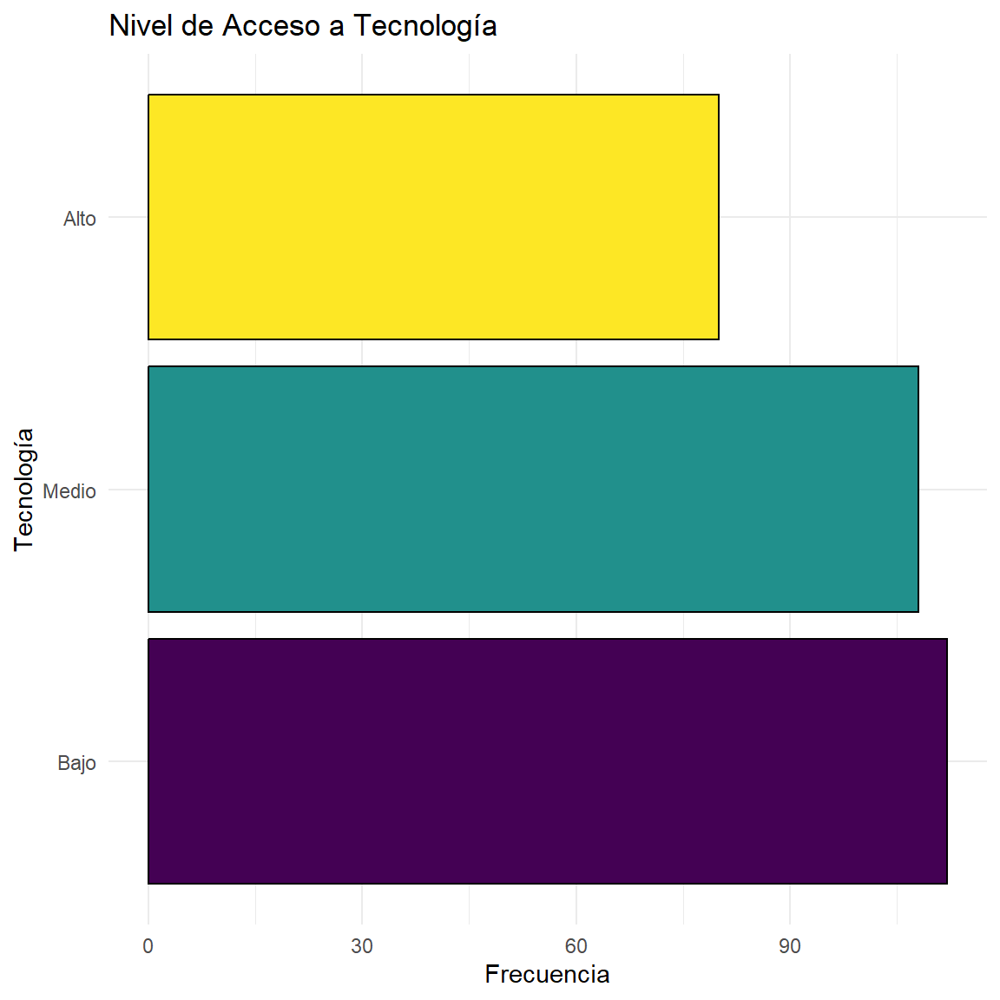
Interpretación
A partir de la tabla de distribución de frecuencias de la variable Tecnología, se puede identificar la proporción de estudiantes según su nivel de acceso o uso de recursos tecnológicos. La categoría con mayor frecuencia permite reconocer el nivel predominante dentro de la población analizada.
La gráfica de barras facilita la comparación entre los distintos niveles (bajo, medio y alto), mientras que la gráfica circular permite observar de manera clara la participación porcentual de cada categoría en relación con el total.
En general, la distribución de esta variable permite comprender el grado de acceso a herramientas tecnológicas, aspecto fundamental en el proceso educativo. Un mayor predominio de niveles medios o altos sugiere condiciones favorables para el aprendizaje apoyado en la tecnología, mientras que una mayor presencia de niveles bajos podría indicar limitaciones en el acceso a estos recursos.
library(ggplot2)ggplot(tabla_genero, aes(x = Genero, y = fi)) +geom_point(size =5, color ="#5DADE2") +geom_segment(aes(x = Genero, xend = Genero, y =0, yend = fi),color ="#2E86C1", size =1) +labs(title ="Distribución de Género",x ="Género",y ="Frecuencia" ) +theme_minimal()
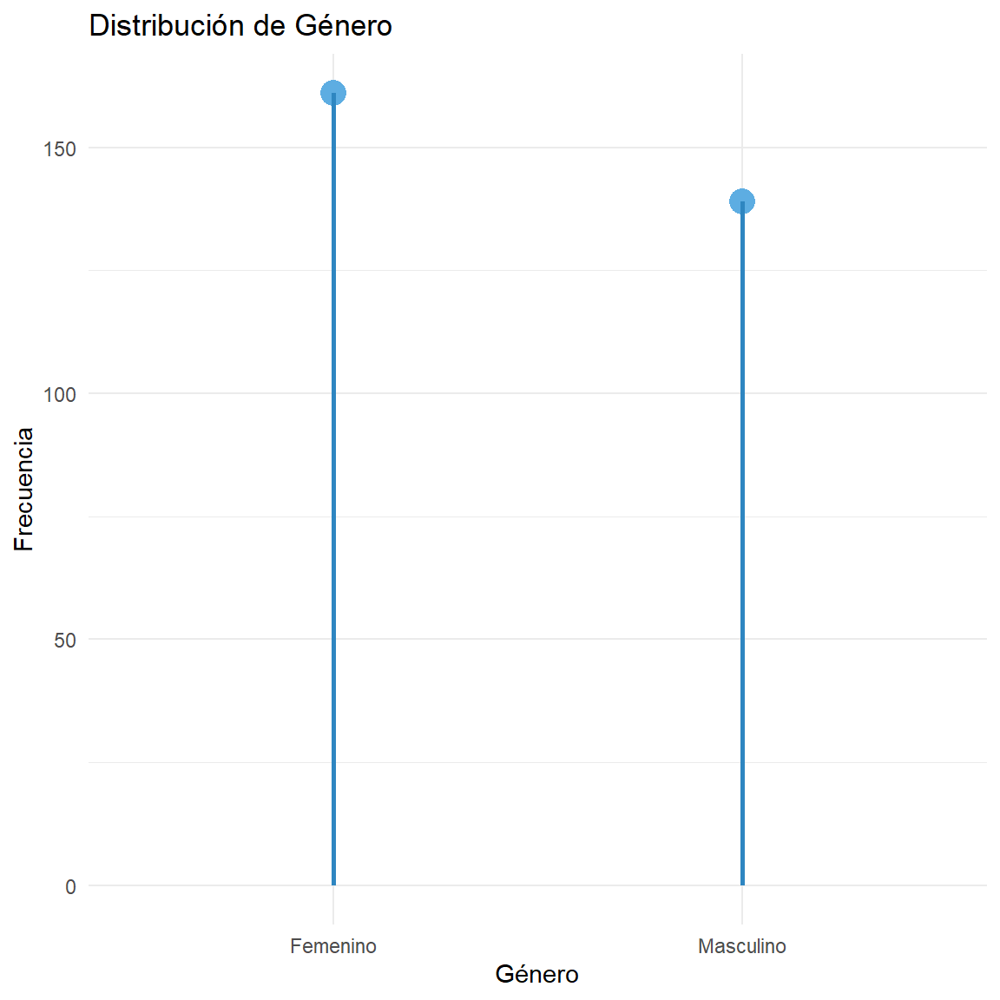
Ver código
library(ggplot2)# Calcular porcentajetabla_genero$porcentaje <-round(tabla_genero$fi /sum(tabla_genero$fi) *100, 1)ggplot(tabla_genero, aes(x = Genero, y = fi, fill = Genero)) +geom_col(color ="black", width =0.6) +geom_text(aes(label =paste0(porcentaje, "%")),vjust =-0.5, size =4) +labs(title ="Distribución de Género",subtitle ="Frecuencia y porcentaje de estudiantes",x ="Género",y ="Frecuencia" ) +theme_minimal() +theme(legend.position ="none",plot.title =element_text(face ="bold", size =16),plot.subtitle =element_text(size =12),axis.title =element_text(face ="bold") )
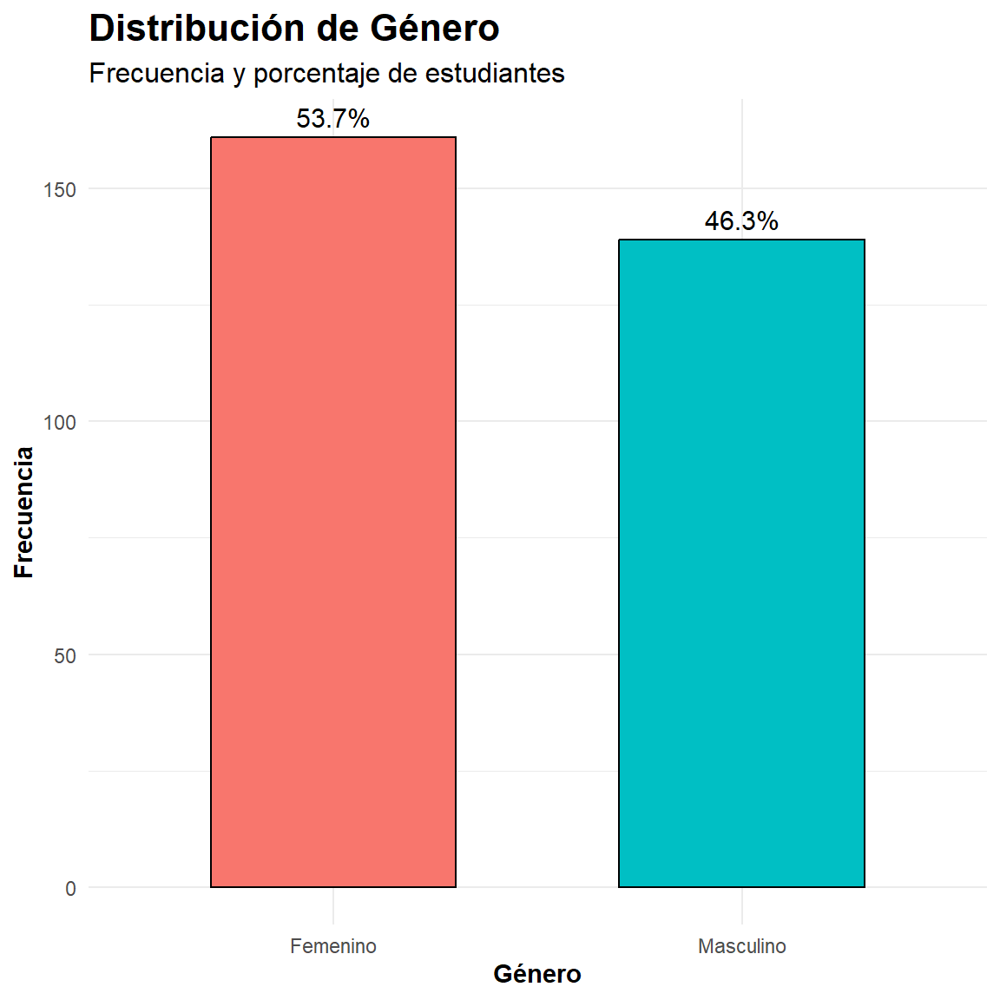
Interpretación
A partir de la tabla de distribución de frecuencias de la variable Género, se puede identificar la proporción de estudiantes en cada categoría. La categoría con mayor frecuencia corresponde al grupo predominante dentro de la población analizada.
La gráfica de barras permite comparar de forma clara las diferencias en la cantidad de estudiantes según el género, mientras que la gráfica circular facilita la visualización de la participación de cada categoría en relación con el total.
En general, la distribución de esta variable permite analizar la composición de la población estudiantil, evidenciando si existe un equilibrio entre los grupos o si predomina uno de ellos.
library(ggplot2)ggplot(tabla_sat, aes(x = Satisfaccion, y = fi)) +geom_point(size =4, color ="#AF7AC5") +geom_segment(aes(x = Satisfaccion, xend = Satisfaccion, y =0, yend = fi),color ="#7D3C98", size =1) +labs(title ="Nivel de Satisfacción",x ="Satisfacción",y ="Frecuencia" ) +theme_minimal()
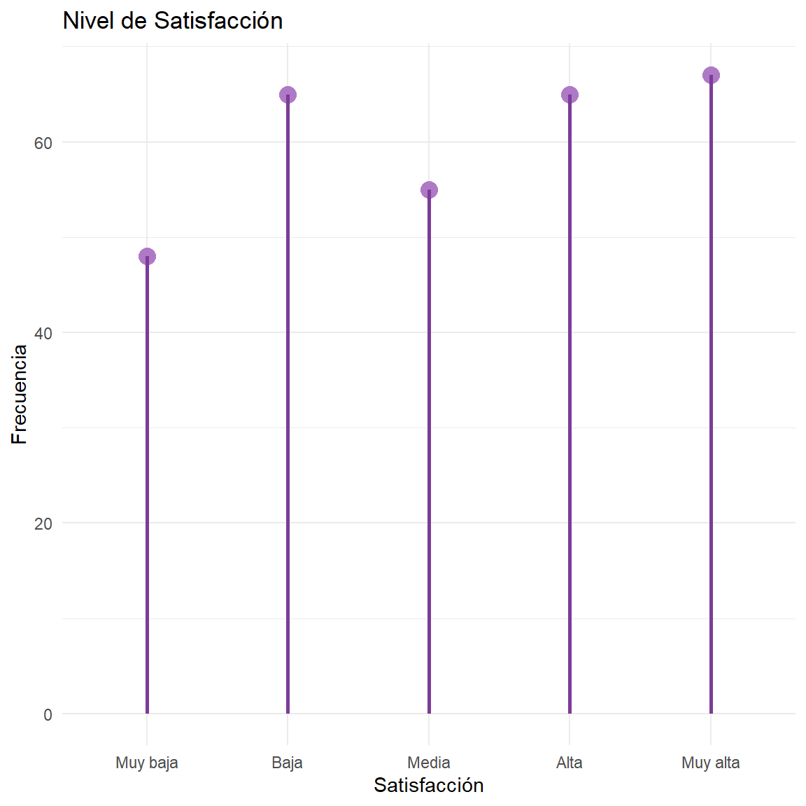
Ver código
library(ggplot2)# Calcular porcentajestabla_sat$porcentaje <-round(tabla_sat$fi /sum(tabla_sat$fi) *100, 1)ggplot(tabla_sat, aes(x = Satisfaccion, y = fi, fill = Satisfaccion)) +geom_col(color ="black", width =0.6) +geom_text(aes(label =paste0(porcentaje, "%")),vjust =-0.5, size =4) +labs(title ="Nivel de Satisfacción",subtitle ="Frecuencia y porcentaje de estudiantes",x ="Satisfacción",y ="Frecuencia" ) +theme_minimal() +theme(legend.position ="none",plot.title =element_text(face ="bold", size =16),plot.subtitle =element_text(size =12),axis.title =element_text(face ="bold") )
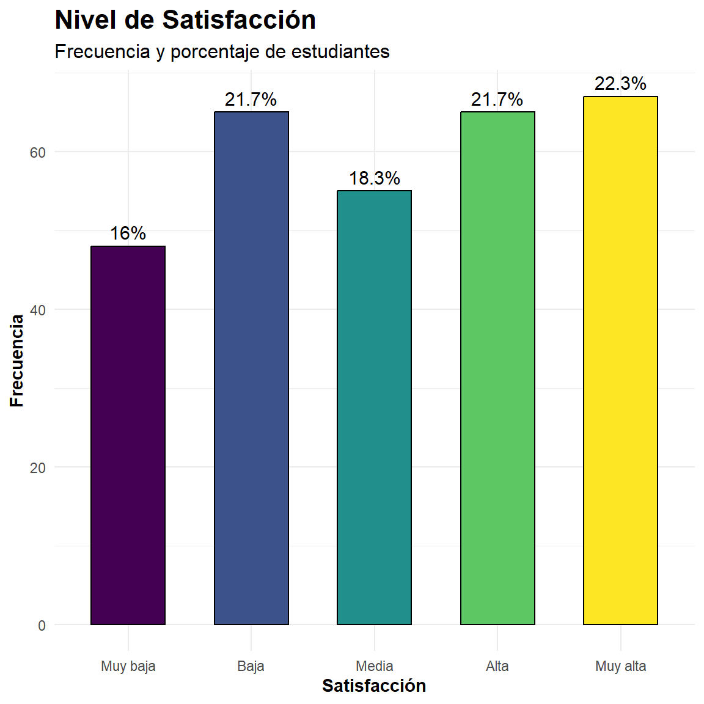
Interpretación
A partir de la distribución de la variable Satisfacción, se puede analizar la percepción de los estudiantes respecto a su experiencia académica. La categoría con mayor frecuencia permite identificar el nivel de satisfacción predominante dentro del grupo estudiado.
Dado que se trata de una variable de tipo ordinal, es posible observar una tendencia general en los datos, ya sea hacia niveles más altos o más bajos de satisfacción. Esto proporciona información valiosa sobre cómo los estudiantes perciben la calidad del proceso educativo.
En términos generales, esta variable resulta clave para comprender el comportamiento de otras variables analizadas, como el rendimiento académico y la asistencia, ya que refleja el grado de conformidad de los estudiantes con su entorno educativo
library(ggplot2)ggplot(tabla_nivel, aes(x = Nivel_Educativo, y = fi, fill = Nivel_Educativo)) +geom_col(color ="black", width =0.6) +coord_flip() +labs(title ="Distribución del Nivel Educativo",subtitle ="Frecuencia de estudiantes por nivel",x ="Nivel Educativo",y ="Frecuencia" ) +theme_minimal() +theme(legend.position ="none",plot.title =element_text(face ="bold", size =16),plot.subtitle =element_text(size =12),axis.title =element_text(face ="bold") )
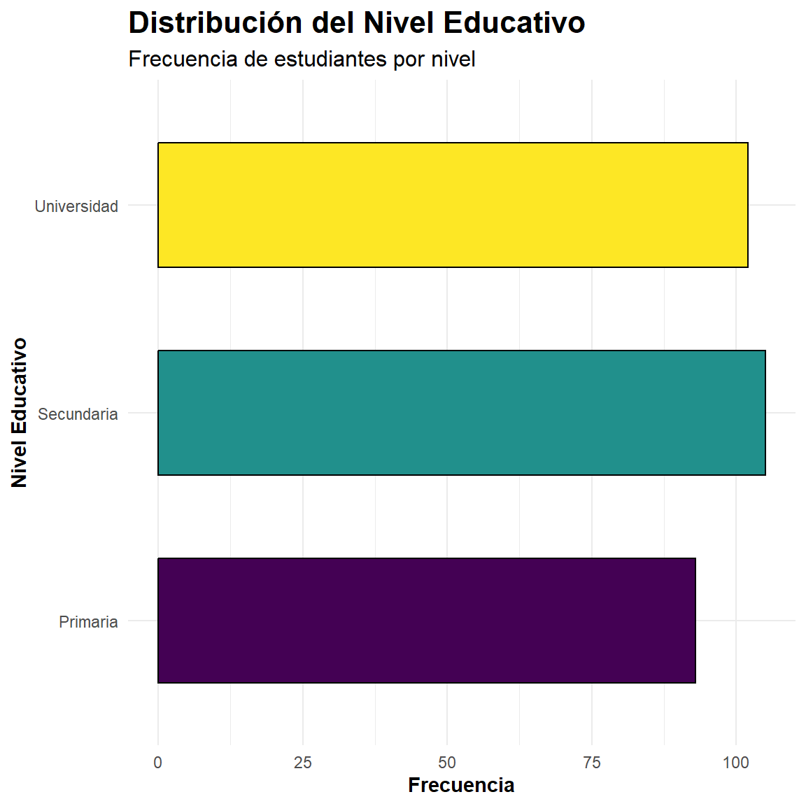
Ver código
library(ggplot2)ggplot(tabla_nivel, aes(x = Nivel_Educativo, y = fi, group =1)) +geom_area(fill ="#5DADE2", alpha =0.7) +geom_point(size =4, color ="#2E86C1") +labs(title ="Distribución del Nivel Educativo",x ="Nivel Educativo",y ="Frecuencia" ) +theme_minimal()
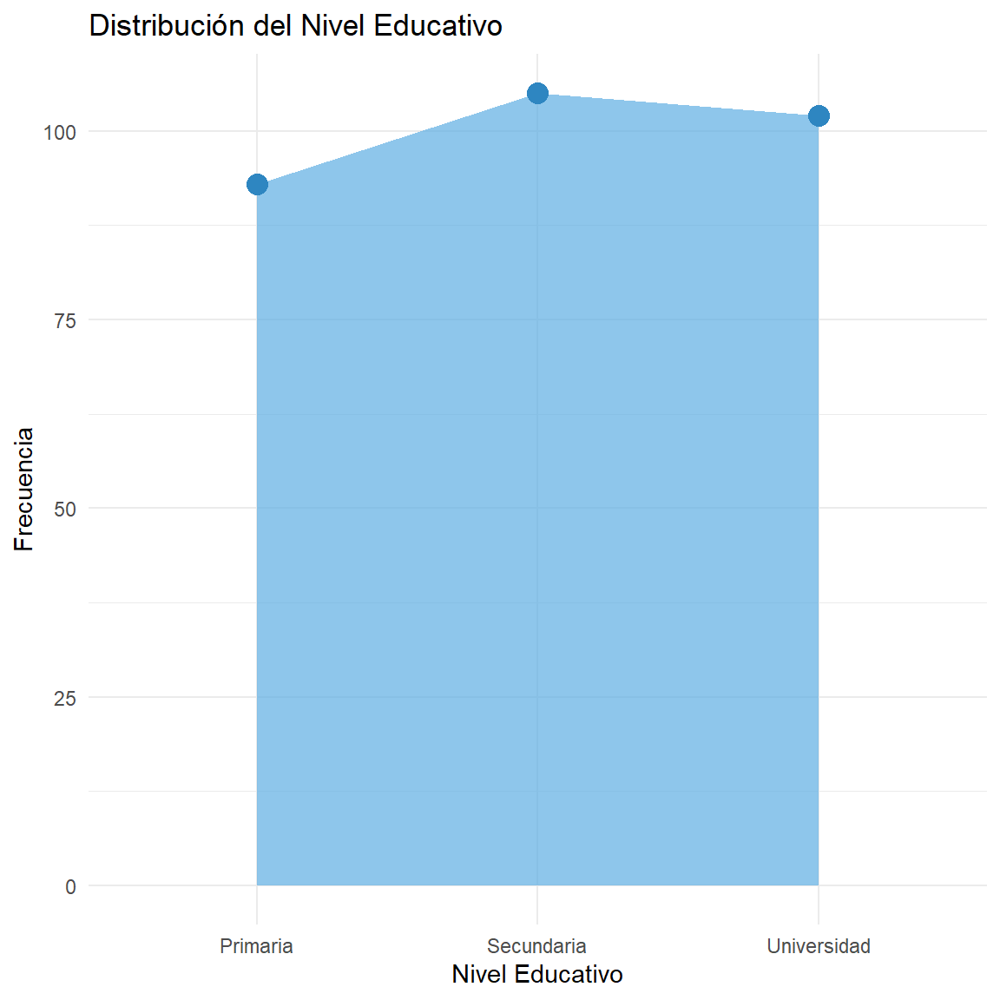
Interpretación
A partir de la tabla de distribución de frecuencias de la variable Nivel Educativo, se puede identificar la proporción de estudiantes según su nivel de formación. La categoría con mayor frecuencia permite reconocer el nivel predominante dentro de la población analizada.
La gráfica de barras facilita la comparación entre los diferentes niveles (primaria, secundaria y universidad), mientras que la gráfica circular permite observar de manera clara la participación porcentual de cada categoría respecto al total de estudiantes.
En términos generales, la distribución del nivel educativo permite comprender la composición académica de la población estudiantil, evidenciando si existe una concentración en determinados niveles. Este aspecto resulta relevante para el análisis, ya que el nivel educativo puede influir en variables como el rendimiento académico y el uso de la tecnología.
7 Conclusiones
A partir del análisis estadístico realizado mediante distribuciones de frecuencia, fue posible organizar, sintetizar e interpretar la información de la población estudiantil, lo que permitió una comprensión integral de sus características sociodemográficas y académicas.
En primer lugar, la clasificación de las variables facilitó la aplicación adecuada de herramientas de la estadística descriptiva, al diferenciar entre variables cualitativas y cuantitativas, así como entre discretas y continuas. Esta distinción fue fundamental para la correcta elaboración de las tablas de frecuencia y sus respectivas representaciones gráficas, garantizando la coherencia y validez del análisis.
Asimismo, el estudio permitió identificar patrones relevantes dentro de la población analizada. En las variables cualitativas, como género, nivel educativo, acceso a la tecnología y nivel de satisfacción, se evidenciaron distribuciones que ayudan a comprender la composición del grupo y las condiciones en las que se desarrolla el proceso educativo. En particular, el acceso a recursos tecnológicos y la percepción de satisfacción se destacan como factores clave para interpretar el contexto educativo y su posible impacto en el aprendizaje.
Por otro lado, el análisis de variables cuantitativas, como el número de cursos, las horas de estudio, el promedio académico y el porcentaje de asistencia, permitió observar tendencias en el comportamiento académico de los estudiantes. La agrupación de los datos en intervalos y el uso de histogramas facilitaron la identificación de concentraciones y la forma de las distribuciones, evidenciando en general comportamientos estables y sin presencia significativa de valores atípicos.
De igual manera, la integración de tablas de frecuencia con representaciones gráficas fortaleció la interpretación de los resultados, ya que permitió visualizar de forma clara las relaciones y tendencias presentes en los datos. Este enfoque no solo favorece la comprensión de la información, sino que también apoya la toma de decisiones fundamentadas en evidencia.
En conclusión, el uso de las distribuciones de frecuencia como herramienta de análisis estadístico permitió describir de manera rigurosa la realidad de la población estudiada, resaltando la importancia de la estadística descriptiva en el ámbito educativo. Este tipo de análisis no solo facilita la interpretación de los datos, sino que también constituye una base sólida para estudios posteriores y para la formulación de estrategias orientadas al mejoramiento del proceso educativo.